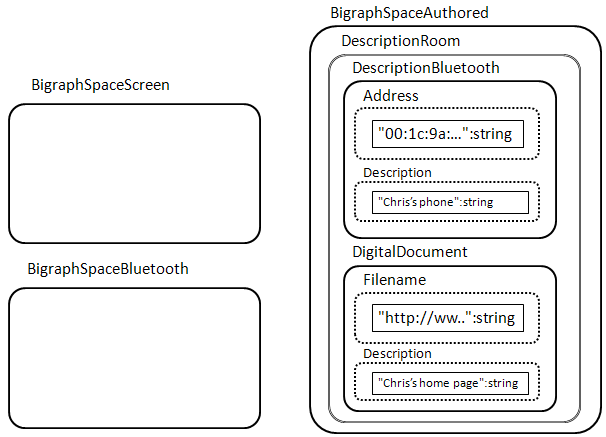
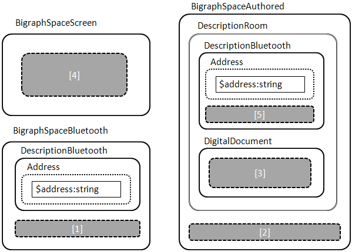
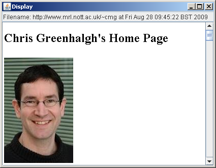

Bluetoothex is an example application developed using bigraphspace, in fact it is arguably the first application (excluding BigEd, the Eclipse plug-in).
This application is based on a simple ubicomp scenario that has been used in previous discussions of bigraphs: a mobile user with a hand-held device is presented with document(s) appropriate to their current location as they move around some site of interest (such as a museum).
The technical basis assumed is the use of bluetooth "beacons" (i.e. discoverable bluetooth devices) placed physically within the site of interest, each of which is associated with a locally relevant document; the mobile device periodically scans for beacons and displays the corresponding document to the user.
The application would be run on the mobile device. It begins by loading the following bigraph (from etc/initialcontent.btl):
bigraph
BigraphSpaceScreen
| BigraphSpaceBluetooth
| BigraphSpaceAuthored (
DescriptionRoom (
DescriptionBluetooth (
BluetoothAddress ( "00:1c:9a:ed:54:29":string )
)
| DigitalDocument (
Filename ( "http://www.mrl.nott.ac.uk/~cmg":string )
)
)
)

The three top level nodes are:
In this example, there is one configured region of interest, the single DescriptionRoom node in the BigraphSpaceAuthored node. It contains - and therefore associates - the bluetooth beacon with bluetooth address "00:1c:9a:ed:54:29" and the document with URL "http://www.mrl.nott.ac.uk/~cmg".
The application has a timer thread which periodically (every 15 seconds) does a bluetooth hardware scan using its local bluetooth radio (a low-level I/O operation). Each time this thread runs it clears any previous content of the BigraphSpaceBluetooth node and inserts into the now-empty node a DescriptionBluetooth node (like the one in BigraphSpaceAuthored) for every observed bluetooth beacon.
This activity cannot be precisely represented using a standard bigraph reaction rule in the case of multiple beacons in range (because it simultaneously creates DescriptionBluetooth for every observed beacon. If only one beacon is in range then it corresponds to a reaction such as:
bigraph BigraphSpaceBluetooth ( [1] ) =>
bigraph BigraphSpaceBluetooth ( DescriptionBluetooth ( BluetoothAddress ( "00:1c:9a:ed:54:29":string ) ) )
The "behaviour" of the application is represented by one reaction rule with a bigraph expression as its redex:
bigraph
// a detected bluetooth radio...
BigraphSpaceBluetooth( [1]
| DescriptionBluetooth ( BluetoothAddress ( $address:string ) )
)
// leave authoring unchanged
|| BigraphSpaceAuthored( [2]
| DescriptionRoom(
DescriptionBluetooth ( BluetoothAddress ( $address:string ) )
| DigitalDocument ( [3] )
)
)
// a screen...
|| BigraphSpaceScreen( [4] )
// variables...
where $address:string

Note the use of the index variable $address which allows the redex to match any bluetooth address, provided that the same address is present both in the bluetooth beacon report (in BigraphSpaceBluetooth) and in the authored configuration.
The site [1] allows the rule to fire even if other beacons are also in sight; the site [2] allows the rule to fire if other rooms are also configured; the site [3] abstracts over the internal structure of the document to be displayed; the site [4] "captures" the current content of the screen.
So this rule will fire if the bluetooth beacon code places a DescriptionBluetooth into the BigraphSpaceBluetooth with the same bluetooth address as one in the authored configuration, provided that in the authored configuration it is also associated with a document (by common nesting within a DescriptionRoom).
The reactum - also parameterised in $address, as bound by the redex - is as follows:
bigraph
// remove detected bluetooth radio...
BigraphSpaceBluetooth( [1] )
// leave authoring unchanged
|| BigraphSpaceAuthored( [2]
| DescriptionRoom(
DescriptionBluetooth ( BluetoothAddress ( $address:string ) )
| DigitalDocument ( [3] )
)
)
// update screen
|| BigraphSpaceScreen(
DigitalDocument ( [3] )
)
where $address:string
Note that the internal structure of the document (its filename, in this case) is copied from the authored description into the BigraphSpaceScreen, replacing any previous things on the screen.
Note also that the bluetooth beacon report is removed from the BigraphSpaceBluetooth, suppressing further firing of this rule until or unless the bluetooth input process runs again.
Finally, the application has a further reaction rule and associated event listener to handle displaying documents on the actual device.
The reaction rule (expression) is as follows:
bigraph BigraphSpaceScreen( [1] | DigitalDocument ( Filename ( $filename:string ) ) )
where $filename:string
=>
bigraph BigraphSpaceScreen( [1] )
where $filename:string

I.e. one DigitalDocument (which in this case must have a Filename "field") is removed from the BigraphScreenSpace.
The program event listener which fires when this reaction occurs attempts to load the specified file as a URL on the device screen:

This is the first time I have really used the indexed controls (for strings), to avoid the use of constant links, and I think it works OK (conceptually it is preferable IMO).
Because the application scans for bluetooth beacons repeatedly, and replaces the DescriptionBluetooth nodes each time, the application will re-display the document each time the beacon is scanned in range.
It is hard - but interesting - to try to work out how other temporal behaviours could be implemented and modelled, e.g. show only the first time, show on first observation after a gap.
If several beacons are observed at the same time which have associated documents then those documents will be displayed rapidly in an arbitrary order each time the bluetooth scanning activity runs.
Again, it is hard - but interesting - to try and work out how other strategies could be implemented and modelled, both at the level of pure bigraphs, and with the addition of higher-level constructs or constraints.
The build uses ANT. It currently assumes that bigraphspace.jar has been built already (in ../../bigraphspace/dist, using "ant jar" in the bigraphspace directory).
The test is run with "ant test".
The Bluetooth scanning is a rather old Win32-specific implementation; source and build file included (for Visual C++), but with no warranty.
The programmatic API for building bigraphs is rather verbose, long-winded and not fully implemented (watch out for "unimplemented" exceptions when you run your application).
2009-08-28
2009-08-27